a)
| Przekątna prostopadłościanu o krawędziach długości a, b, c ma długość równą: |
Uzasadnimy twierdzenie podane w tabeli.
Narysujmy prostopadłościan o krawędziach długości a, b, c. Mamy:
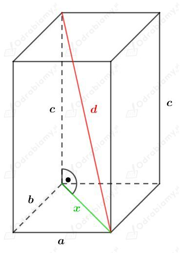
Korzystając z twierdzenia Pitagorasa dla trójkąta prostokątnego o bokach długości a, b, x mamy:
Korzystając z twierdzenia Pitagorasa dla trójkąta prostokątnego o bokach długości x, c, d mamy:
co kończy dowód.
b)
Uzasadnijmy, że przekątna sześcianu o krawędzi długości a ma długość równą a√3.
Sześcian to prostopadłościan, którego wszystkie krawędzie są równej długości.
Korzystając ze wzoru na długość przekątnej prostopadłościanu, wyznaczmy długość przekątnej d sześcianu o krawędzi długości a. Mamy:
co kończy dowód.
| Przekątna prostopadłościanu o krawędziach długości a, b, c ma długość równą: |
a)
Dany jest prostopadłościan o krawędziach długości 5, 9, 12.
Rysunek:
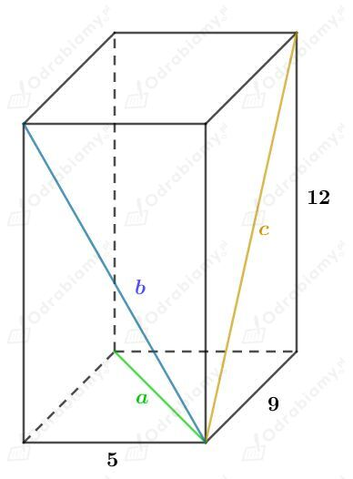
Wyznaczmy długości przekątnych ścian bocznych. Skorzystamy w tym celu z twierdzenia Pitagorasa. Mamy:
Wyznaczmy długość przekątnej d tego prostopadłościanu, korzystając ze wzoru. Mamy:
b)
Dany jest prostopadłościan o krawędziach długości 6, 8, 15.
Rysunek:
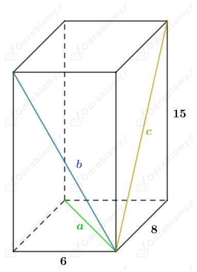
Wyznaczmy długości przekątnych ścian bocznych. Skorzystamy w tym celu z twierdzenia Pitagorasa. Mamy:
Wyznaczmy długość przekątnej d tego prostopadłościanu, korzystając ze wzoru. Mamy:
Niech a będzie długością krawędzi danego sześcianu.
Wtedy długość przekątnej ściany bocznej wynosi a√2, a długość przekątnej sześcianu wynosi a√3.
Rysunek:
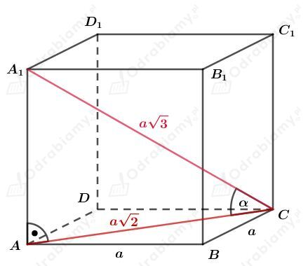
Zauważmy również, że trójkąt ACA1 jest trójkątem prostokątnym, co zaznaczono na rysunku.
Wyznaczmy cosinus kąta 𝛼. Mamy:
czyli
Z tabeli przybliżonych wartości funkcji trygonometrycznych mamy:
Dany jest graniastosłup prawidłowy czworokątny. Krawędź jego podstawy ma długość 5 cm.
a)
Przekątna jego ściany bocznej tworzy z krawędzią podstawy kąt o mierze 30o.
Rysunek:
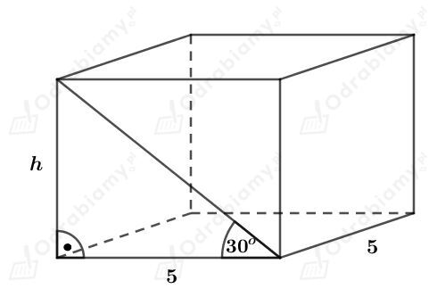
Korzystając z funkcji tangens mamy:
Obliczmy pole powierzchni całkowitej. Mamy:
b)
Przekątna jego ściany bocznej tworzy z krawędzią boczną kąt o mierze 30o.
Rysunek:
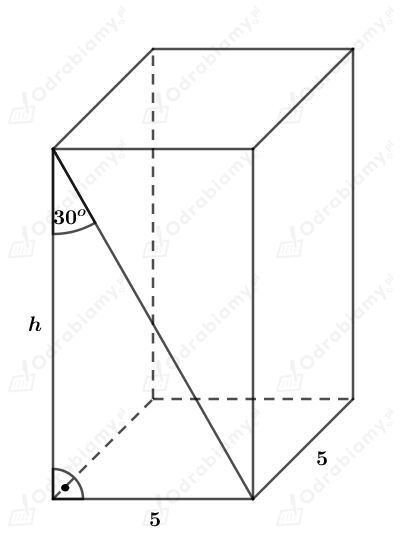
Korzystając z funkcji tangens mamy:
Obliczmy pole powierzchni całkowitej. Mamy:
c)
Przekątna jego ściany bocznej tworzy z przekątną graniastosłupa kąt o mierze 30o.
Rysunek:
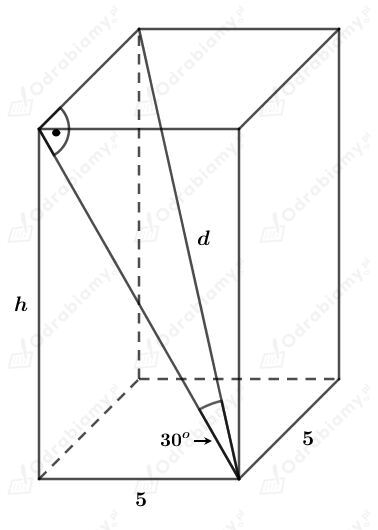
Korzystając z funkcji sinus mamy:
Korzystając ze wzoru na długość przekątnej prostopadłościanu mamy:
Obliczmy pole powierzchni całkowitej tego graniastosłupa. Mamy:
Skoro dany jest graniastosłup jest prawidłowy czworokątny, to jego podstawą jest kwadrat.
Niech a będzie długością krawędzi podstawy tego graniastosłupa, a h długością jego wysokości.
Chcemy pokazać, że graniastosłup jest sześcianem, czyli, że a=h.
Rysunek:
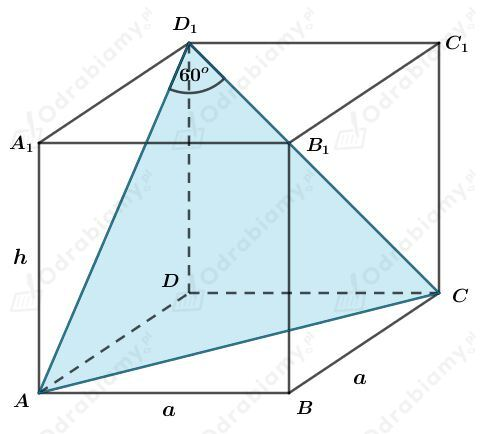
Zauważmy teraz, że jeśli podstawą graniastosłupa jest kwadrat, to wszystkie ściany boczne są przystającymi prostokątami (prostokąty o bokach długości a oraz h).
W szczególności więc prostokąty ADD1A1 oraz DCC1D1 są przystające. Odcinki AD1 oraz CD1 to przekątne tych prostokątów, czyli |AD1|=|CD1|.
Oznacza to, że trójkąt ACD1 jest równoramienny (bo boki AD1 oraz CD1 mają jednakową długość).
Obliczmy, jakie miary mają kąty przy podstawie w trójkącie równoramiennym ACD1 (wiemy, że kąt między ramionami ma miarę 60°, a suma miar wszystkich kątów w trójkącie wynosi 180°). Mamy:
W trójkącie ACD1 wszystkie kąty mają więc miarę 60°, a więc jest to trójkąt równoboczny.
Odcinki AD1, AC oraz CD1 mają więc jednakowe długości (bo są bokami trójkąta równobocznego).
Oznacza to, że przekątna kwadratu o boku długości a (odcinek AC) jest równa przekątnej prostokąta o bokach długości a oraz h. Zatem a=h.
Wykazaliśmy, że ten graniastosłup jest sześcianem.
co kończy dowód.
Dany jest graniastosłup prawidłowy czworokątny o krawędzi podstawy długości 4 cm.
a)
Przekątna tego graniastosłupa tworzy z przekątną podstawy kąt o mierze 45o.
Wiemy, że przekątna kwadratu o boku długości a ma długość a√2. Przekątna kwadratu o boku długości 4 cm ma więc długość 4√2 cm.
Rysunek:
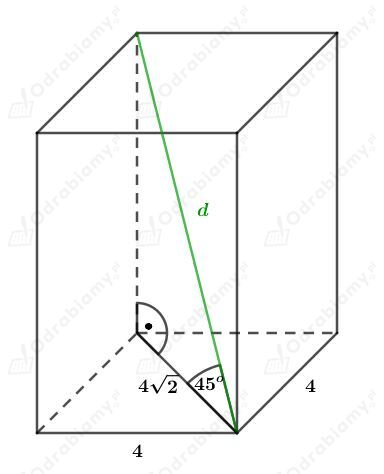
Powstały trójkąt jest trójkątem prostokątnym równoramiennym.
Korzystając ze związku między długościami boków w trójkącie o kątach 45o, 45o, 90o mamy:
b)
Przekątna tego graniastosłupa tworzy z jedną z krawędzi bocznych kąt o mierze 30o.
Wiemy, że przekątna kwadratu o boku długości a ma długość a√2. Przekątna kwadratu o boku długości 4 cm ma więc długość 4√2 cm.
Rysunek:
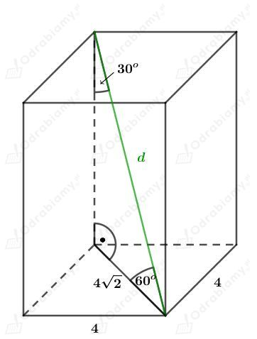
Korzystając ze związku między długościami boków w trójkącie o kątach 90°, 60°, 30° mamy:
c)
Przekątna tego graniastosłupa tworzy z przekątną jednej ze ścian bocznych kąt o mierze 30o.
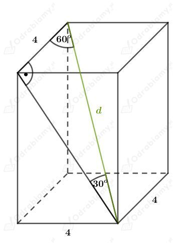
Korzystając ze związku między długościami boków w trójkącie o kątach 90°, 60°, 30° mamy:
Rysunek:
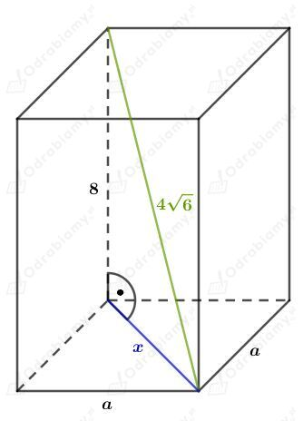
Korzystając z twierdzenia Pitagorasa mamy:
Korzystając ze wzoru na długość przekątnej kwadratu mamy:
Obliczmy pole powierzchni całkowitej tego graniastosłupa. Mamy: